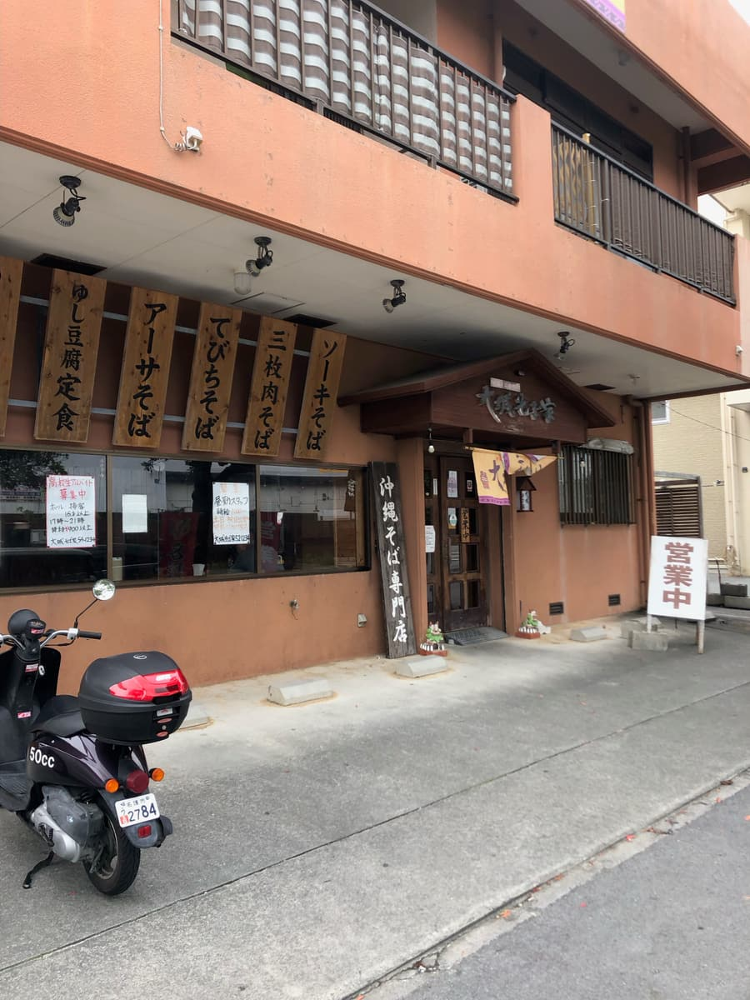
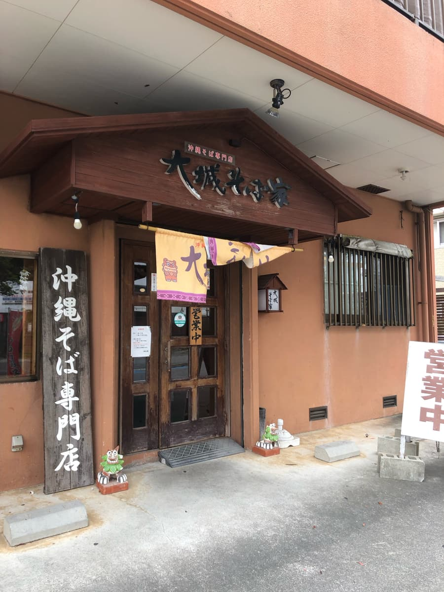
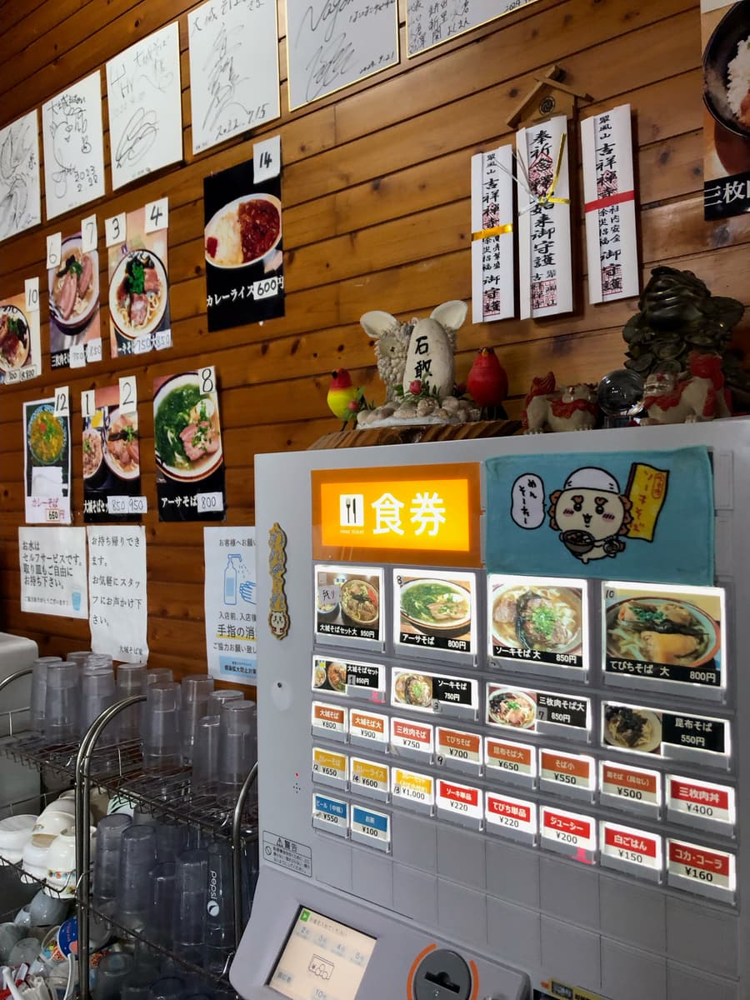
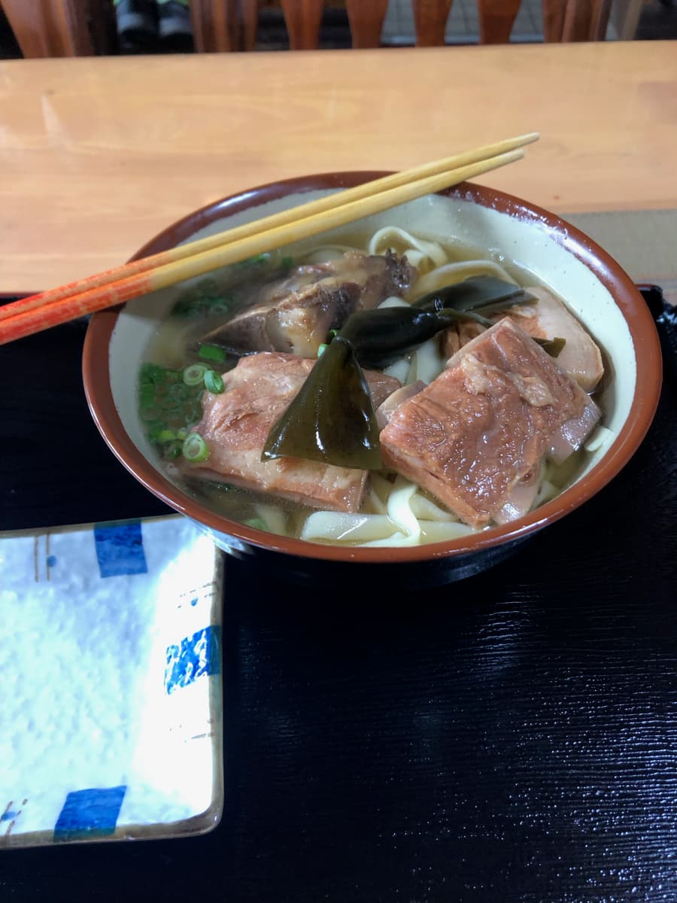
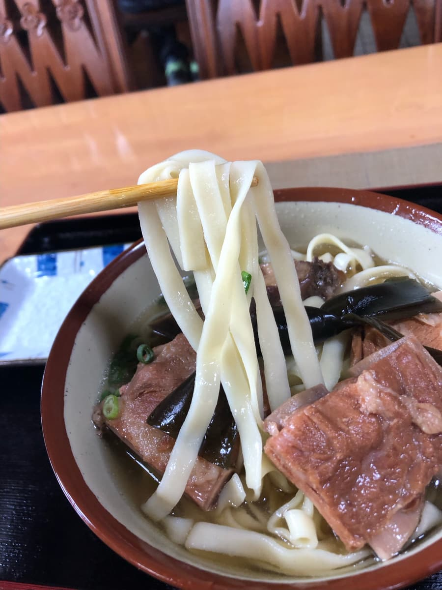

こちらの記事はＡＩ（Claude 3.5 Sonnet）で作成したものを一部加筆しています笑🍜✨ 今回は名護市宮里にある「大城そば家」さんをご紹介します。
2024.8に食べました。こちらのお店は「オススメ店にも引けを取らない沖縄そば屋」で紹介した「おおしろそば」と場所も近く、名前も似ていますね(^0^;) 今回もワクワクしながら入店しました😊


「大城そば家」さん、外観からして地元に愛されている雰囲気が漂っていますね。サーモンピンク色の建物が目を引きます。入口には「沖縄そば専門店」の看板と、メニューの木札がずらりと並んでいて、わくわくしますね🎉
店内に入ると、お昼時ということもあってか、地元のお客さんでにぎわっています。活気のある声が飛び交っていて、人気店の雰囲気が伝わってきます。カウンター席とテーブル席があり、私はテーブル席に座りました。（お客さんで賑わって、店内の写真撮れずすみません🙏）
メニューを見ると、やはり看板メニューの「大城そば」が目に飛び込んできます。これは外せませんね😆 注文の際、麺は細麺と平麺から選べるとのこと。私は名護らしい平麺を選んでみました。

しばらくすると、待ちに待った「大城そば」の登場です！🎊

まずは見た目から。黄金色に輝くスープに、ゴロゴロとした具材が顔を出しています。結び昆布が乗っているのが特徴的ですね。これ、以前に行った名護の「宮里そば」さんを思い出させます。名護の沖縄そばの特徴なのかもしれませんね😄
さて、いつものようにまずはスープから味わってみます。ん？予想外の味わいですね。最初は鰹ベースかなと思ったのですが、意外にも豚骨が効いた感じです。普通に美味しい感じですね👍

次に麺をいただきます。選んだ平麺は柔らかいです。つるんとした食感で、スープとの相性も悪くありません。ただ、個人的には少し歯ごたえがあった方が好みかな😊
具材に目を向けると、ソーキがゴロンと鎮座しています。トロッと柔らかい。口に入れると、やはり柔らかくて肉の旨味がじんわりと広がります。味付けはあっさりめで、スープの味を邪魔しないバランスの取れた仕上がりです。
そして、先ほど触れた結び昆布。これがまた良いアクセントになっていますね。昆布の旨味がスープに溶け出して、全体の味わいをより深くしてくれています。
全体的に食べてみての感想は...うーん、普通に美味しいかな🤔 特別驚くような独自性はないものの、安定感のある美味しさです。
評価（9点/15点）：普通に美味しく、安定感のある沖縄そばでした。「オススメ店に引けを取らない沖縄そば屋」の「おおしろそば」さんほど、特に驚きはないものの、名護の地元の味として十分に楽しめる一杯だと思います。皆さんも名護に来る機会があれば、こちらの「大城そば家」さんに立ち寄ってみてくださいね。地元の雰囲気を味わいながら、ほっこりとした時間を過ごせること間違いなしです🏖️
麺 ：★★★☆☆（3）
スープ：★★★☆☆（3）
具 ：★★★☆☆（3）